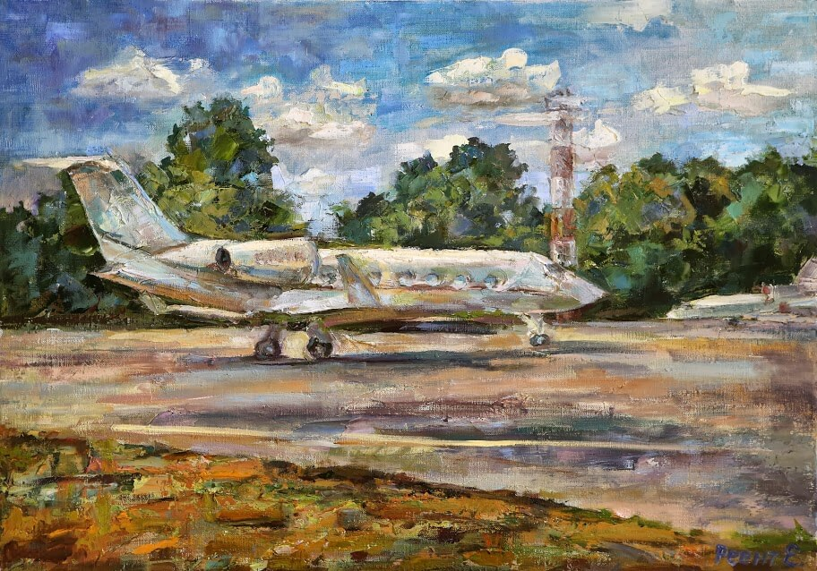

Обо Мне
Родилась и живу в Киеве (Украина).
Образование: Британский институт маркетинга, Киевский политехнический институт.
В 47 лет впервые в жизни взяла в руки кисть и начала брать мастер-классы живописи в художественной студии известной украинской художницы Анны Дахно, уроки рисунка, акварели и пастели постигала под руководством художника Виктора Каверина - члена Союза художников Украины.
Считаю, что живописная практика - это вид дзен медитации. Здесь и сейчас, в абсолютной свободе и полном слиянии с объектом живописи рождается картина-состояние. Достичь высших духовных состояний в творчестве помогают занятия древним китайским боевым искусством тайцзи-цюань.
О моих картинах.
Так бывает, что человек, достигнув вершин зрелости, и, преодолевая перевалы поисков смысла, вдруг берет в руки кисть и открывает себя заново. Это очень психологически благотворный феномен. Вдобавок, когда он сопровождается щедрым урожаем творческого вдохновения.
Неутомимость и плодовитость Елены Реент просто поразительна. А с усердием в обучении и поиске приходит и качество работ. Её живопись светла по духу и настроению, обнажая искренность и непосредственность натуры автора. Эйфорическое буйство колорита, многоцветие чистых пигментов пастозного мазка, смело и грубовато отформованного широкой кистью или мастихином – всё это напрямую восходит к революционным открытиям импрессионистов и живописной эстетике Поля Сезанна.
Без сложных валёрных градаций, но и без аматорской грязноватой кашицы, интуитивным чувством цвета она создает образы окружающей действительности в их непосредственном виде, обнажая их скрытую тайну и индивидуальное настроение. Натюрморты и пейзажи, цветы и сосуды, лошади и лодки, пальмы и волны переполняют ее восхищенный взгляд на мир. Все преисполнено любовью и вниманием автора. Будь то белеющая на фоне синевы неба санторинская терраса, венецианские каналы или нарциссы, агонизирующие над ручьем…
Живопись Елены Реент чиста и жизнерадостна, и не может не импонировать открытому, непосредственному восприятию жизни в ее красоте и естественной простоте.